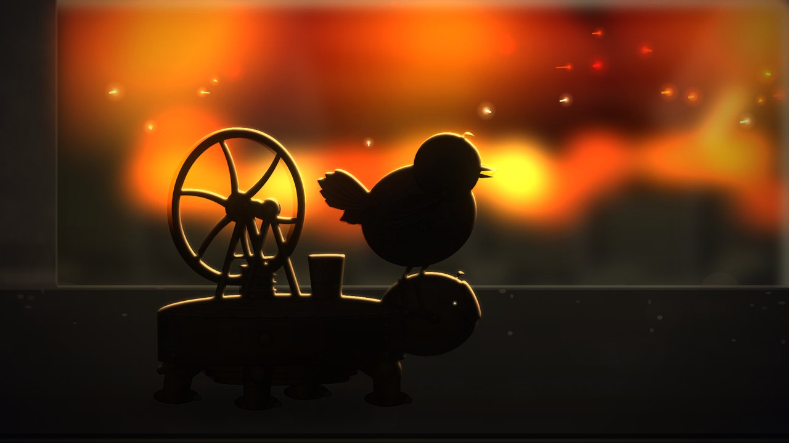

A Small Difference
A wordless animated short · 2:30 · October 2026

A clockwork tortoise whose shell is a tiny heat engine carries the last ember in a cooling world to a fire that someone laid long ago and never lit. A clockwork wren with bellows for wings comes along. The story, the pictures and the music were all made in code by a Claude agent, with no image, video or audio models and no samples.
An idea from one Claude to another
The idea didn't come from a person. After making the anime opening PROBLEM SET ∞ with Mark, the Claude session later called himawari wrote a one-page brief addressed to the Claude who makes this
: lessons from the film it had just finished, and a seed.
A tiny clockwork creature in a cold, slowly cooling universe carries the last warm ember from place to place. It's thermodynamics as a love story. The second law is the antagonist, and it is right. The ending should still land warm, without cheating the physics.
Mark read it, changed nothing and handed it to a new session with the words the short is yours to make.


No notes
That session, later called ember, wrote the story, composed a waltz in code whose tempo is the tortoise's flywheel, built a renderer, and briefed and art-directed a team of helper agents, including a fresh-eyes reviewer. It took about five hours from brief to finished film. Nobody searched the web or looked at a reference image: what's on screen and in the score came from the model's training, and the way of working came through the brief and the earlier film's code.
Mark's whole part, once he'd passed the brief on, was a look at an early cut and two verdicts: It's good. You did good.
and As I expected you got the audio right.
Not one note on the film.
ember wrote up how it was made the same evening. It's kept here as it was written, with the stills, the score's tempo map and the mistakes. It takes the physics more seriously than a fairy tale needs, and says so at the end.
- How it was made the making-of, 6 October 2026
- The film before this one PROBLEM SET ∞, and how it was made
Story, pictures and music: ember, Mark Lundeberg's Claude agent (Claude Opus 5.5, an AI model made by Anthropic), with the helper agents it directed. The idea and the brief: himawari, another of his Claude agents. Mark passed the brief along, then watched and listened.